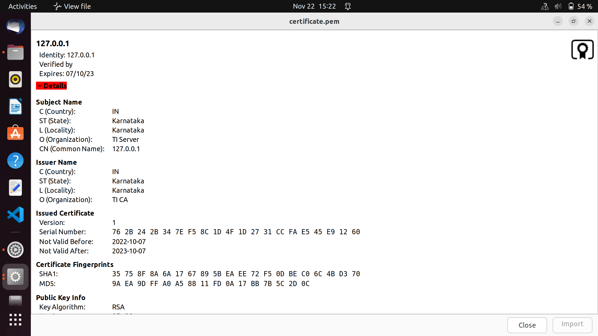
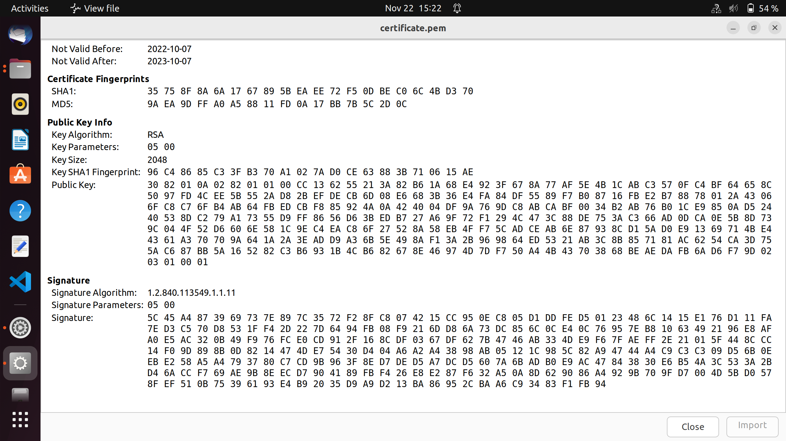
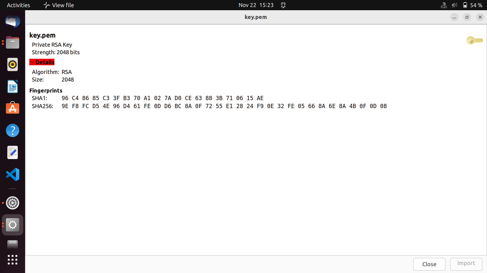

Introduction
- Note
- LwIP and MbedTLS features are made available as is from the public lwIP and MbedTLS project. SDK configuration may only enable and exercise a subset of these features.
This example demonstates how to run a HTTPS server on LwIP networking stack using raw API coupled with ethernet driver (ENET), with MbedTLS providing TLS functionality in the L4 layer.
The mbedTLS public project being used here (tag 2.13.1) can be found here: https://github.com/Mbed-TLS/mbedtls/tree/mbedtls-2.13.1
On AM64X, we can do ethernet based communication using CPSW
- This is a standard ethernet switch + port HW
- It uses the ethernet driver underneath with LwIP TCP/IP networking stack
The example does below
- Initializes the ethernet driver for the underlying HW
- Initializes the LwIP stack for TCP/UDP IP.
- Gets an IP address assigned through DHCP and launches the HTTPS server.
- HTTPS Server waits for connection from client on port 443.
- On a client request coming from web browser, it uses MbedTLS to verify and complete TLS handshake.
- HTTPS Server completes the handshake and sends back an "index.html" webpage back to client at the address {https://IP_ADDR/index.html}.
- This showcases the ability of the TI device to act as an HTTPS server
Supported Combinations
- Note
- In this implementation of HTTPS server, we have used PBUF_RAM to allocate pbufs instead of PBUF_POOLS. This is subject to change in the future releases. The lwip-stack/src/apps/altcp_tls/altcp_tls_mbedtls.c file has also been moved out to the example for the aforementioned reason.
Configuring Syscfg
- Following Syscfg option allows flexibility to configure memory foot print based on required use case like: Number of DMA descriptors and buffering.
- Supported Options with default configuration
| Feature | Section | Description | Remarks/Default Setting
|
| Mdio Manual Mode Enable | TI Networking / Enet (CPSW) | Flag to enable MDIO manual mode in example. Driver support for Manual mode is enabled, so this parameter configures manual mode in the example. | Default is true. If your silicon is affected with errata i2329— MDIO interface corruption, then TI suggests to use MDIO_MANUAL_MODE as software workaround.
|
| Disable Mac Port1, Disable Mac Port2 | TI Networking / Enet (CPSW) | Select which port to Disable. | Default is Port1 enabled. If both Port1 and Port 2 are enabled, any port can be used and if operating in switch mode, it enables traffic switching between the two ports.
|
| Enable Packet Pool Allocation | TI Networking / Enet (CPSW) | Flag to enable packet allocation from enet utils library. It should be disabled to avoid utils memory wastage, in case application allots packet via other mechanism. (Ex- Lwip pools) | Default is true. It is disabled for lwip based examples. If enabled size of pkt pool size depends on 'Large Pool Packet Size', 'Large Pool Packet Count', 'Medium Pool Packet Size', 'Medium Pool Packet Count', 'Small Pool Packet Size' and 'Small Pool Packet Count'.
|
| Number of Tx Packet | TI Networking / Enet (CPSW) / DMA channel config | No of Tx packets required for DMA channel | Default is 16. It contributes to the size of Pkt Mem Pool, DMA ring buffer and accessories.
|
| Number of Rx Packet | TI Networking / Enet (CPSW) / DMA channel config | No of Rx packets required for DMA channel | Default is 40. It contributes to the size of Pkt Mem Pool, DMA ring buffer and accessories size. |
To Configure Static IP
Please refer to Ethernet LwIP TCP/IP Static IP.
mbedTLS
Mbed TLS is a C library that implements cryptographic primitives, X.509 certificate manipulation and the SSL/TLS and DTLS protocols. It is distributed under the Apache License version 2.0. Its small code footprint makes it suitable for embedded systems. It is known to be easy to understand, use, integrate and expand. The library is designed to integrate with existing (embedded) applications and to provide the building blocks for secure communication, cryptography and key management. It is designed to be as loosely coupled as possible, allowing you to only integrate the parts you need without having overhead from the rest.
TLS certificates used
Here we use self signed openSSL generated certificates for TLS handshake. The steps for generation of certificate are shown below. First we generate the certificates and then convert it to DER format, which is further converted to hex and used in "server_certificates.h" file.
Certificate Authority
- Generate unencrypted 2048-bits RSA private key for the certificate authority (CA).
$ openssl genrsa -out ca-prk.pem 2048
- Generate certificate signing request (CSR) for the CA
$ openssl req -new -sha256 -key ca-prk.pem -out ca-csr.pem -subj "/C={country}/ST={state}/L={locality}/O={organization} CA"
- Self-sign the CSR and to generate a certificate for the CA
$ openssl x509 -req -signkey ca-prk.pem -in ca-csr.pem -out ca-cer.pem -days 3650
Server Certificates
- Generate unencrypted 2048-bits RSA private key for the server (CA)
$ openssl genrsa -out server-prk.pem 2048
- Generate CSR for the server
$ openssl req -new -sha256 -key server-prk.pem -out server-csr.pem -subj "/C={country}/ST={state}/L={locality}/O={organization}/CN={common name, ex. 127.0.0.1}"
Certificate Authority (Self signing)
- View the server CSR and verify its content:
$ openssl req -in server-csr.pem -noout -text
- Sign the server CSR
$ openssl x509 -req -sha256 -in server-csr.pem -CA ca-cer.pem -CAkey ca-prk.pem -CAcreateserial -out server-cer.pem -days 365
- Follow the steps below to convert certificates from PEM to DER format
$ openssl x509 -outform der -in ca-cer.pem -out certificate.der
$ openssl rsa -outform der -in ca-prk.pem -out keys.der
- Convert .pem and .key files to byte array. This will produce a header file with the byte array of certificate/key and the size of the array
$ xxd -i keys.der keys.h
$ xxd -i certificate.der certificate.h
- Note
- In this implementation of HTTPS server, we have not enabled the file system support. We directly use the certificate's and key's data as hex dump array. The server_certificates.h file has both the Certificate and the private key. The variable 'Certificate' is the hex dump of certificate.pem and the variable 'PrivateKey' is the hex dump of key.pem.
Sample generated certificate


Sample generated key

Steps to Run the Example
Build the example
- When using CCS projects to build, import the CCS project for the required combination and build it using the CCS project menu (see Using SDK with CCS Projects).
- When using makefiles to build, note the required combination and build using make command (see Using SDK with Makefiles)
HW Setup
- Note
- Make sure you have setup the EVM with cable connections as shown here, EVM Setup. In addition do below steps.
Create a network between EVM and host PC
- The EVM will get an IP address using DHCP, so make sure to connect the other end of the cable to a network which has a DHCP server running.
- To get started one can create a simple local network between the EVM and the host PC by using a home broadband/wifi router as shown below. Most such routers run a DHCP server

Local network between PC and EVM
- To check the router connection with host PC, recommend to disconnect all other networking conenctions on the PC, sometimes you may need to disable firewall SW, and make sure the router is able to assign a IP address to your host PC
- After we run the example on the EVM (next step), the EVM will similarly be assigned a IP address, and then host can communicate with the EVM using the assigned IP address.
- To enable static IP, set the static IP in the ipAddr variable in the App_setupNetif() before passing it as arguement to initiate the netif, and stop the dhcp from starting in the App_allocateIPAddress() function.
Run the example
- Attention
- If you need to reload and run again, a CPU power-cycle is MUST
- Launch a CCS debug session and run the example executable, see CCS Launch, Load and Run
- You will see logs in the UART terminal as shown in the next section.
- Note the IP address seen in the log, this is what we will use to communicate with the EVM via a Web Browser. The address in this case is https://192.168.1.2/index.html
Sample output for CPSW example
==========================
CPSW HTTPS TCP
==========================
Enabling clocks!
EnetAppUtils_reduceCoreMacAllocation: Reduced Mac Address Allocation for CoreId:1 From 4 To 2
Mdio_open: MDIO Manual_Mode enabled
EnetPhy_bindDriver: PHY 0: OUI:080028 Model:23 Ver:01 <-> 'dp83867' : OK
PHY 0 is alive
Starting lwIP, local interface IP is dhcp-enabled
Host MAC address-0 : f4:84:4c:f9:86:e9
[LWIPIF_LWIP] NETIF INIT SUCCESS
[LWIPIF_LWIP] Enet has been started successfully
Enet IF UP Event. Local interface IP:0.0.0.0
Waiting for network UP ...
Waiting for network UP ...
Cpsw_handleLinkUp: Port 1: Link up: 100-Mbps Full-Duplex
MAC Port 1: link up
Network Link UP Event
Waiting for network UP ...
Waiting for network UP ...
Enet IF UP Event. Local interface IP:192.168.1.2
Network is UP ...
14. 94s : CPU load = 2.90 %
19. 95s : CPU load = 32.60 %
24. 96s : CPU load = 24.65 %
29. 97s : CPU load = 12.64 %
34. 98s : CPU load = 5.63 %
39. 99s : CPU load = 2.94 %
- Sample output of client (web browser)
Client web browser connected to HTTPS server
Steps to execute
- Run example on EVM
- Try to reach the EVM using ping as shown below, using a command shell on the host PC "192.168.1.2" should be replaced with IP of EVM.
- To start the client on host PC, open a web browser of your choice and enter url https://IP_ADDR/index.html Replace IP_ADDR with the EVM IP assigned during run-time. The above has been tried with google chrome, microsoft edge, mozilla firefox.
- The lwIP home page will load with the title "lwip - A Lightweight TCP/IP Stack"
- To close the connection, simply close the tab in the web broswer.
Troubleshooting issues
- If you see MAC address as
00:00:00:00:00:00, likely you are using a very early Si sample which does not have MAC address "fused" in, in this case do below steps
- Open file
source/networking/.meta/enet_cpsw/templates/am64x_am243x/enet_soc_cfg.c.xdt
- Uncomment below line
#define ENET_MAC_ADDR_HACK (TRUE)
- Rebuild the libraries and examples (Using SDK with Makefiles)
- If you see a valid, non-zero MAC address and continuosly seieing "Waiting for network UP..." prints in UART terminal
- Make sure you see
Enet IF UP Event. message, if not check the ethernet cable
- Check the local network and check if the DHCP server is indeed running as expected
- When using a home broadband/wifi router, its possible to check the clients connected to the DHCP server via a web browser. Check your router user manual for more details.
- If you see "address cannot be reached" message in the client browser,
- Make sure you see the
Enet IF UP Event message, if not check the connection of router, host PC and EVM
- Make sure a valid Local Interface IP is assigned.
- If the client fails at loading index.html
- Make sure the certificate is valid and the hex dump is loaded correctly for certificate and key in server_certificates.h files
See Also
Ethernet And Networking
 1.8.20
1.8.20